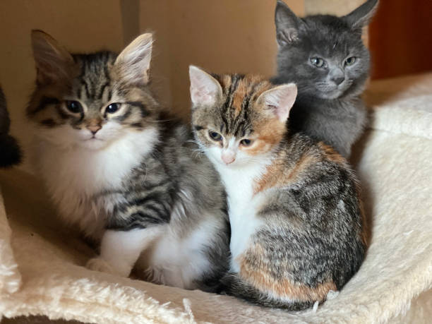

1-ALIMENTACION:Proporciónale comida de calidad según su edad, tamaño y nivel de actividad. Evita darle alimentos tóxicos como chocolate, uvas, cebolla o ajo.
2-HIDRATACION:segúrate de que siempre tenga acceso a agua limpia y fresca para evitar la deshidratación
3-ACTIVIDAD:Los perros necesitan actividad física para mantenerse sanos y felices. Paseos, juegos y tiempo al aire libre son fundamentales.
4-VETERINARIO:Lleva a tu perro a chequeos regulares, mantén al día sus vacunas y desparasitaciones.
5-HIGIENE: Báñalo según lo necesite (cada 4-6 semanas normalmente), cepilla su pelaje regularmente y revisa sus orejas, dientes y uñas.
6-CARIÑO:Los perros son animales sociales que necesitan amor, tiempo y atención de su familia humana, asegurate de estar pendiente de ellos y brindarles siempre el mayor cariño posible.
GATOS

1-ALIMENTACION:Dale alimento de buena calidad, específico para su etapa de vida (cachorro, adulto o senior). Evita darle comida para perros o restos de comida de humano.
2-HIDRATACION: A los gatos les cuesta tomar agua, así que asegúrate de que siempre tengan acceso a agua fresca. Muchos prefieren bebederos tipo fuente
3-ACTIVIDAD:Proporciónales rascadores, juguetes, estantes o espacios elevados. Esto los estimula mental y físicamente.
4-VETERINARIO:Lleva a tu gato a revisiones periódicas, mantén sus vacunas al día y cuida la desparasitación interna y externa.
5- HIGIENE:Limpia su caja de arena a diario. Los gatos son muy limpios y una caja sucia puede hacer que dejen de usarla. Y aunque los gatos se asean solos, el cepillado ayuda a reducir las bolas de pelo, sobre todo en razas de pelo largo.
6-ESTERILIZACION:Esterilizar o castrar ayuda a prevenir enfermedades y comportamientos indeseados, además de evitar camadas no deseadas. Es importante teniendo en cuenta que los gatos son animales que andan a menudo en la calle.